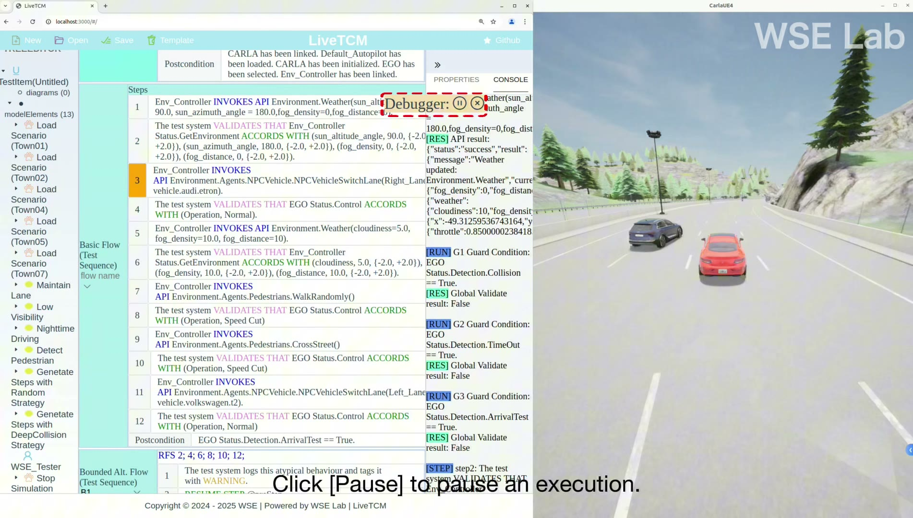
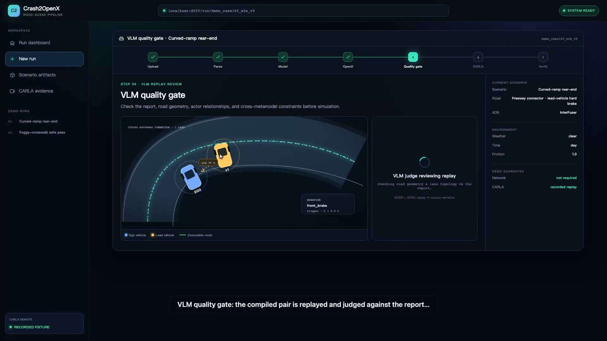
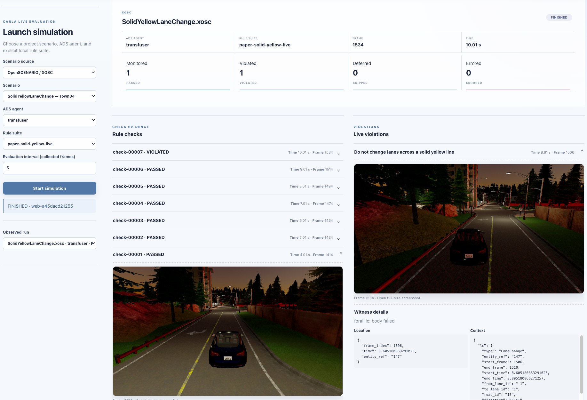

Ensuring the safety and reliability of Autonomous Driving Systems (ADS) requires testing them in dynamic and unpredictable real-world environments. At WSELab, we pursue this goal along complementary directions — from adaptive model-based testing to scenario generation grounded in real-world crash reports.
Back to HomeMuch of the behavior of intelligent systems like ADS can only be observed during operation. This calls for testing approaches that continuously interact with the system under test and its simulated environment — generating, executing, and verifying test scenarios dynamically rather than statically.
Our work in this direction spans a family of tools: LiveTCM adaptively generates test case specifications by interacting with ADS in simulation; Crash2OpenX grounds scenario generation in real-world crashes by transforming natural-language crash reports into executable OpenDRIVE/OpenSCENARIO scenarios; and further efforts along this line are on the way.
Explore each project below — every card leads to a dedicated page with a demo video.

▶ DemoAn adaptive model-based testing framework that dynamically generates, executes, and verifies test case specifications through continuous interaction with ADS in simulation environments.
Explore LiveTCM →
▶ DemoA model-transformation toolchain that turns natural-language crash reports into executable OpenDRIVE/OpenSCENARIO scenarios and replays them in CARLA under autonomous-driving agents.
Explore Crash2OpenX →
▶ DemoExplore the MoRE project and watch its demonstration video on the dedicated project page.
Explore MoRE →A new line of work on testing autonomous driving systems is under way. Stay tuned for its demo and dedicated page.